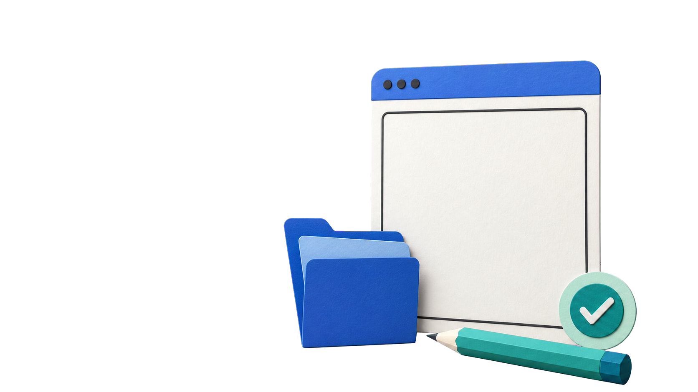
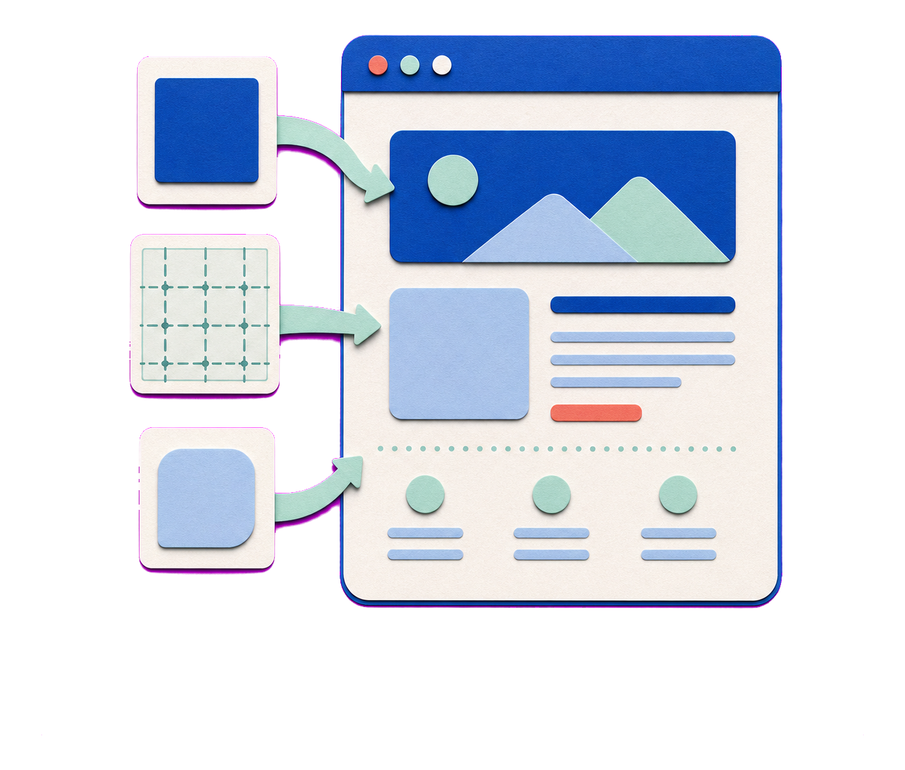

1차시
요청하고, 확인하고, 고치기
타자 게임을 브라우저에서 열어 확인한 뒤 한 가지를 바꿉니다.

코딩 경험이 없는 수강생이 코딩 에이전트와 함께 타자 게임부터 나를 소개하는 웹사이트까지 직접 만들고, 확인하고, 고칩니다.
이제는 한마디만 건네도
글 · 이미지 · 코드 · 화면이 만들어집니다.
중요한 것은 AI를 쓸 수 있느냐보다,
어떻게 일을 맡기느냐입니다.

하루 전체 여정
1차시
타자 게임을 브라우저에서 열어 확인한 뒤 한 가지를 바꿉니다.
2차시
원하는 결과의 기준을 Markdown 문서로 먼저 세우고, 그 기준으로 나를 소개하는 웹사이트를 만들고 확장합니다.
오늘의 목표
수업이 끝나면 내 작업물을 열어 결과를 확인할 수 있습니다.

서로 다른 역할

대화가 길어지면 중요한 조건을 다시 적습니다. AI가 작성해도 최종 결정은 사람에게 있습니다.
브라우저에 보이는 화면
프론트엔드는 사용자가 브라우저에서 직접 보고 누르는 화면을 만드는 영역입니다.

제목 · 문장 · 이미지처럼 내용의 구조를 세웁니다.
비유 집의 뼈대처럼 무엇이 어디에 놓일지 정합니다.

색 · 글자 · 여백 · 배치를 보기 좋게 꾸밉니다.
비유 옷과 인테리어처럼 화면의 인상을 만듭니다.

클릭 같은 행동에 화면이 반응하게 만듭니다.
비유 스위치처럼 행동을 화면의 변화로 연결합니다.
웹서비스 제작 과정

시작 전 확인
연결 상태를 확인합니다.
ChatGPT Go 또는 Plus와 로그인 상태를 확인합니다.
사전 안내대로 설치되어 있는지 확인합니다.
게임에 띄울 단어 5~10개를 메모합니다. 공개해도 되는 단어만 적습니다.

먼저 끝났다면 — 기다리는 동안 단어 목록을 미리 적어 둡니다.
세 단어를 구분하기

파일 탐색기에서 시작

시작 위치
C:\가 보이는지 확인합니다.문서나 다운로드 폴더가 아니라 로컬 디스크(C:)를 직접 엽니다. 여기서 오늘 사용할 기준 폴더를 만들면 위치를 다시 찾기 쉽습니다.
확인 기준 · 왼쪽 탐색창과 주소 표시줄 모두에 C:가 보입니다.
오늘의 기준 폴더

폴더 하나로 시작
C: 드라이브 빈 곳에서 마우스 오른쪽 버튼을 눌러 새로 만들기 → 폴더를 고른 뒤, 이름을 VibeCoding으로 입력합니다.
확인 기준 · 현재 위치가 C:\VibeCoding입니다.
행동하기 때문에 더 조심

참고하는 방식의 차이
지금 대화에 실제로 들어온 정보입니다. 요청 · 대화 · 열어 본 파일처럼, 현재 작업을 이해하는 데 바로 쓰입니다.
중요한 경로 · 유지 조건 · 완료 기준은 현재 요청에 다시 적습니다.다음에도 참고하도록 남긴 정보입니다. 모든 대화를 자동으로 기억하거나, 항상 정확하게 불러오는 기능은 아닙니다.
기억을 기대하기보다 이번 작업의 조건을 명확히 전달합니다.
수정 전에 정할 세 가지
단어 목록 · 점수 규칙 · 현재 구조처럼 이번 요청에서 건드리지 않을 것을 먼저 적습니다.
제한 시간이나 글자 크기처럼 지금 확인할 한 가지만 고릅니다.
바뀐 부분 하나와 그대로 남은 부분 하나를 브라우저에서 나란히 봅니다.

한 번 고칠 때의 흐름

한 번에 다 시키면추측으로 채우는 부분이 늘고,어디서 틀렸는지 알기 어려워집니다.
제한 시간만 넣기
제한 시간 30초만 추가해 달라고 말합니다.
단어 목록 · 점수 규칙 · 나머지 구성은 그대로 유지해 달라고 덧붙입니다.
브라우저에서 남은 시간 표시 하나와 이전 구성의 유지 여부를 함께 봅니다.
제한 시간 30초만 추가해 주세요.단어 목록·점수 규칙·나머지 구성은 그대로 유지해 주세요.

글자 크기를 바꾼 뒤
이전 화면이 아니라 최신 결과를 기준으로 봅니다.
크기는 바뀌고 단어 · 점수 · 제한 시간 · 배치는 남아 있는지 봅니다.
커진 글자가 잘리거나 겹치지 않는지 직접 확인합니다.

원하는 한 가지를 더 바꾼 뒤
통째로 복제하지 않고 분위기 · 색 · 글자 · 여백 · 배치 중 특징 하나만 고릅니다.
고른 특징 하나만 바꾸고, 내 단어 목록과 게임 규칙은 그대로 둔다고 적습니다.
필수 기능과 읽기 쉬움이 맞으면 현재 결과를 남기고 무엇을 확인했는지 기록합니다.

무엇이 다른지 먼저 가르기

같은 ‘안 됨’처럼 보여도 원인이 다르면 다음 행동도 다릅니다.
페이지가 열리지 않거나 작동하지 않습니다.
파일 위치 · 이름 · 저장 · 새로고침을 차례로 확인합니다.
실행은 되지만 요청한 조건을 지키지 않았습니다.
빠진 조건 하나만 다시 말합니다.
조건은 맞지만 색 · 글자 · 여백이 마음에 들지 않습니다.
원하는 특징 하나를 고릅니다.
예를 들어 파일이 열리지 않으면 오류, 단어를 10개 넣었는데 5개만 나오면 요구 불일치, 색이 마음에 들지 않으면 취향 차이입니다.
작업 완료 다음에 하는 일
index.html을 기준으로 새로고침합니다.브라우저가 이전 화면을 그대로 보여 주고 있지 않은지 확인합니다.
공유하기 전 사람이 직접 볼 세 가지
개인정보
연락처 · 환경변수 · 계정 정보가 들어가 있지 않은지 봅니다.
공개해도 되는 단어만 남깁니다.
권리
다른 사이트의 로고나 이미지를 그대로 복사하지 않았는지 봅니다.
참고 자료에서는 분위기 · 색 · 여백 등 특징 하나만 고릅니다.
사실
화면에 적힌 안내 문구와 점수 규칙이 실제 동작과 맞는지 직접 확인합니다.
확인하지 못한 내용은 넣지 않고 사람이 최종 결정합니다.